Fundacja Patrz Globalnie · Krosno, Poland
Look Globally.
Erasmus+ youth projects where art, technology and sustainability meet, made in Poland's City of Glass.
When Curiosity Meets Action, Change Becomes Art.
We are a youth-driven foundation. We turn challenges like climate change and digital ethics into chances for young people to learn, collaborate and lead.
Move the glass lens over the sentence to read it in Polish.
Where our youth come from
Every arc is a journey to a project.
Tap a glowing country
Trash → Treasure
This is a pile of trash.
Bottles, cans, caps, scraps. Keep scrolling.
01 · EcoArt · Krosno · 6–14 April 2025
It became a tree.
28 young people from Poland, Hungary, Lithuania and Romania visited MPGK Krosno's recycling centre. Then, inspired by local artist Piotr Burger, they turned waste into sculptures, mosaics and toys.
Read the EcoArt story →02 · Fashion Forward · Krosno · 29 Mar – 6 Apr 2025
It became a dress.
Participants from Poland, Portugal, North Macedonia and Hungary took on fast fashion. They ended with a recycled runway at the Youth Centre in Krosno.
Read the Fashion Forward story →03 · Follow Your Drums! · Krosno · 17–25 Sept 2025
It became a band.
Collected waste was sanitised, decorated and turned into percussion. Youth from five countries then wrote one big group song together.
Read the Drums story →Scroll back up to break it all again.
Look closer
Every photo hides its “after”.
Move the lens over a photo, or tap it on a phone, to see what the project turned it into.
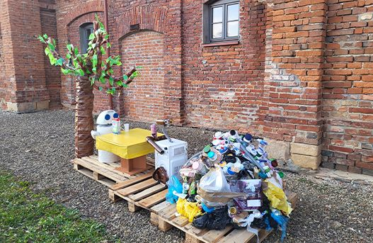
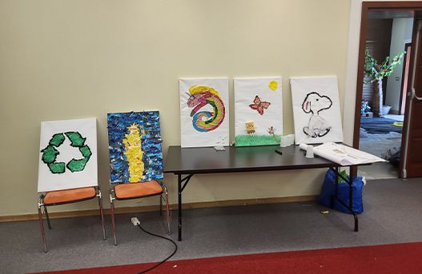
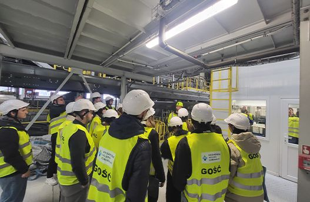
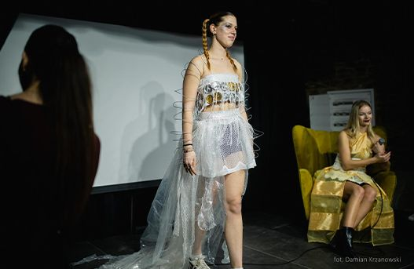
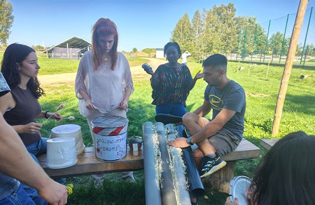
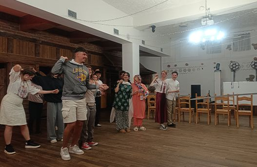
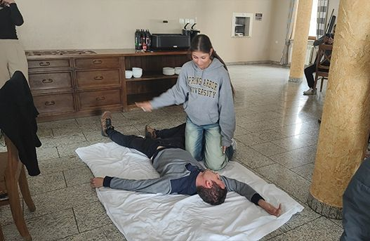
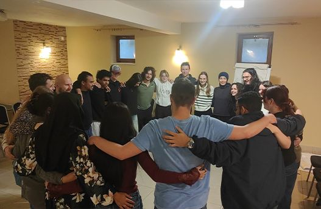
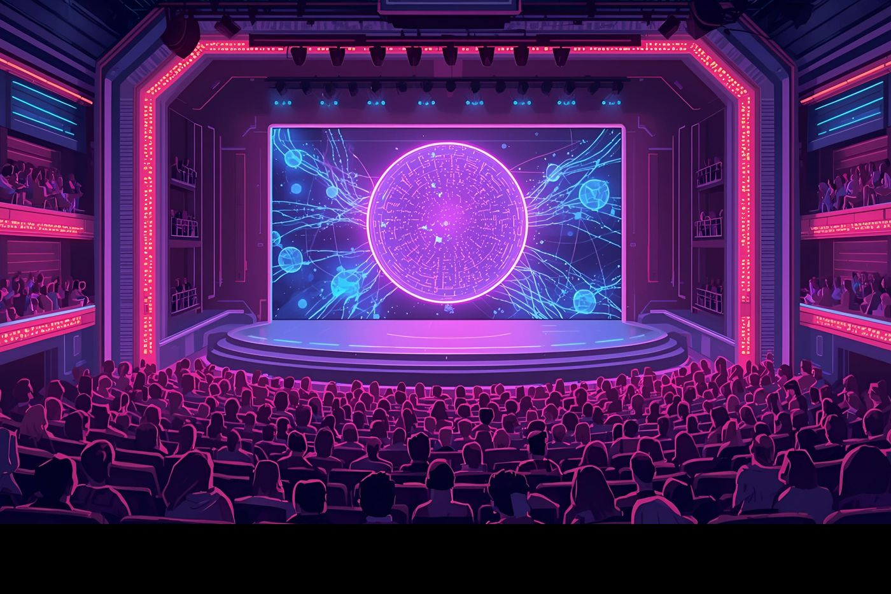
Art Meets AI · 1 & 2
A play directed by an AI narrator
Our first show was performed for 600+ students and teachers in Krosno by 28 young people from Poland, Romania, Slovakia and the Czech Republic. The Next Act brings performers from Poland, Bulgaria, Türkiye and Moldova to an audience of 1,000+.
EYE 2025 · European Parliament, Strasbourg · 13–14 June
Human, or John Doe?
At the European Youth Event we led workshops on Democracy Under Digital Siege. We introduced a packed room to John Doe, a deepfake persona made with AI tools, to ask: what's real, and how can we know?
Try it yourself. Some of these lines are real quotes from our participants. The rest were written by an AI to imitate them.
Read about EYE 2025 →Follow Your Drums! · Krosno · 17–25 Sept 2025
Play the trash kit.
These instruments started as waste picked up around Krosno. Tap them, or use the keys A S D F G. Play the pattern to unlock the group song.
You found the group song. In Krosno, youth from Portugal, Hungary, Romania, North Macedonia and Poland wrote one song together and played it as one band. This is a groove inspired by it.
Fashion Forward · Recycled Runway
The runway was made of waste.
On 4 April 2025 the Youth Centre in Krosno hosted a catwalk of upcycled designs. Before it, guests watched an AI-made short film on fast fashion, created with Sora, Kling, FakeYou and InVideo.
Hover over (or tap) a look to see what it was made from.
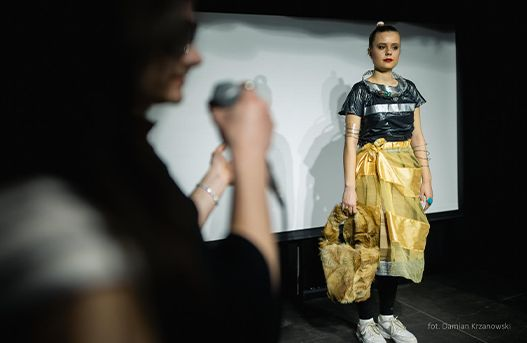
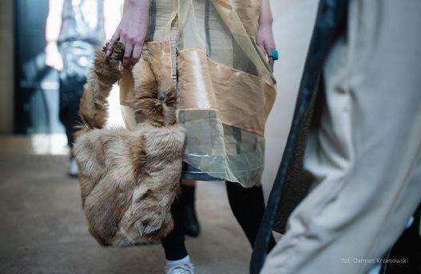
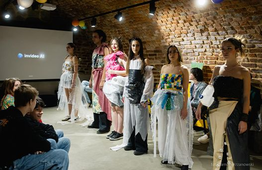
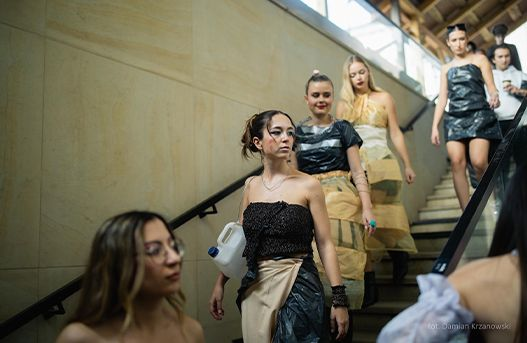
First Aid – Don't Ignore! · Murzasichle · 24–31 March 2026
Can you keep a heart going?
33 participants from Poland, Hungary and Romania trained with a professional paramedic in CPR, AED use and the recovery position. They practised compressions to a metronome and then used forum theatre to teach others.
Chest compressions should be 100–120 per minute. Tap the button 30 times (or focus it and press Space) and see how steady you are.
This is a rhythm game, not training. Please take a real first aid course.
Read the First Aid story →— BPM · 0/30
Start pushing.
Razem Przeciw Uzależnieniom · Together Against Addictions · 2025–2026
Quiet work, real change.
15 young people, some directly or indirectly affected by addiction, turned lived experience into civic action in their own town.
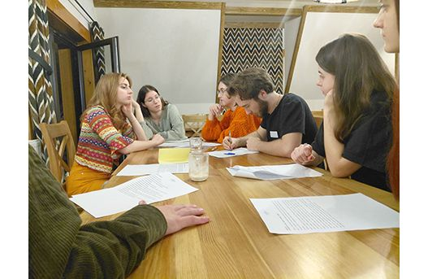
Read the full story →- Learn Workshops with therapists, experts and prevention professionals.
- Travel A mobility to Opole to meet addiction specialists and youth mental health advocates.
- Research Field research and surveys on alcohol availability in Krosno.
- Map A digital Alcohol Danger Zone Map of the city.
- Advocate Recommendations taken to local decision-makers and public institutions.
- Perform A Theatre of the Oppressed show at the State Academy of Applied Sciences and BWA Art Gallery in Krosno.
- Gather A public conference on addiction prevention attended by over 350 people.
Impact
Numbers you can touch.
- 10+ international projects
- 200+ international participants
- 14 countries on our map
Stories from participants
Pick up a photo.
Click a polaroid to turn it over.
Join an exchange
Aged 18–30?
Your exchange could be next.
Our projects are co-funded by Erasmus+, which covers accommodation, food, activities and travel (within Erasmus+ limits). We post open calls first on Instagram.
What does Fundacja Patrz Globalnie do?
We organise international youth projects that combine art, technology and environmental action, focused on non-formal education, intercultural exchange and skills like creativity, leadership and digital literacy.
Who can participate?
Young people aged 18–30 from Europe, especially those with fewer opportunities or from disadvantaged backgrounds. We ensure diversity and inclusion in every programme.
Are projects free to join?
Yes. Our initiatives are co-funded by Erasmus+, which covers accommodation, food, activities and even travel (within the set Erasmus+ limits).
How can I join a project?
Watch our news and Instagram (@patrz.globalnie), where we post open calls and application forms. If you need help applying, message us. We're happy to help!
Can I volunteer or partner with you?
Yes. Message us on social media or through the contact page, and someone from the team will get back to you about next steps.